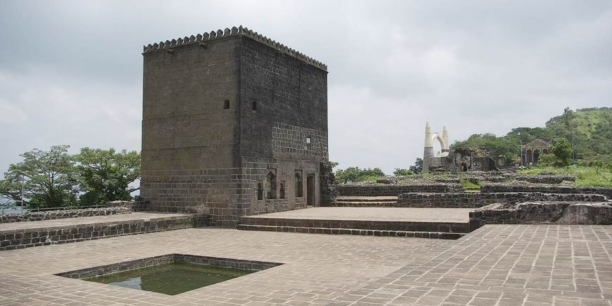
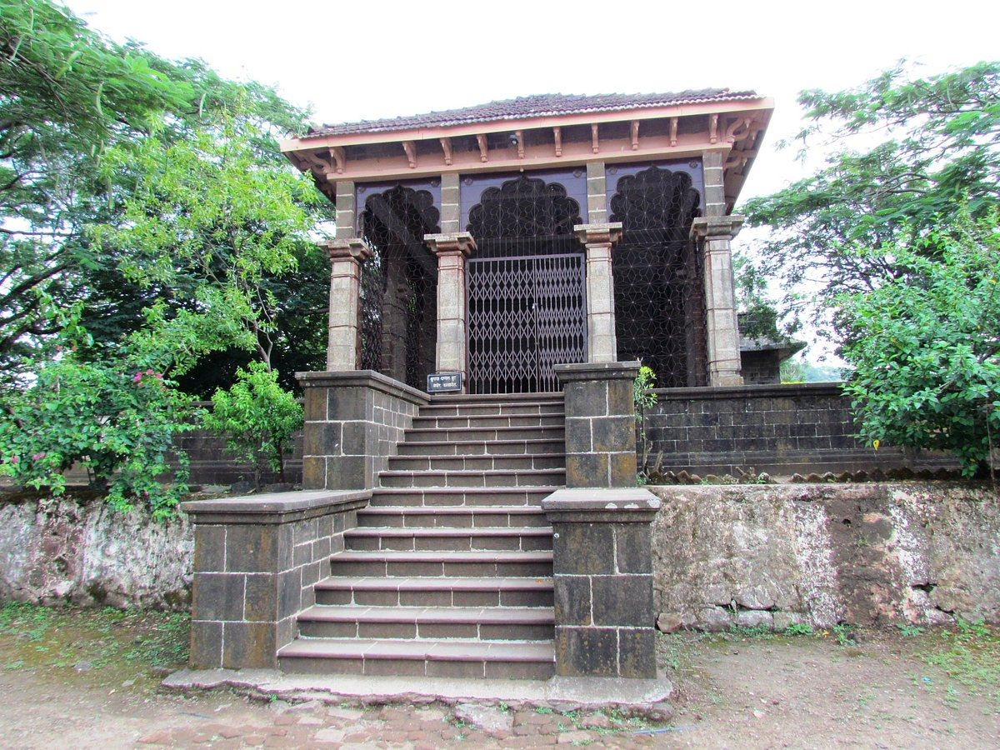
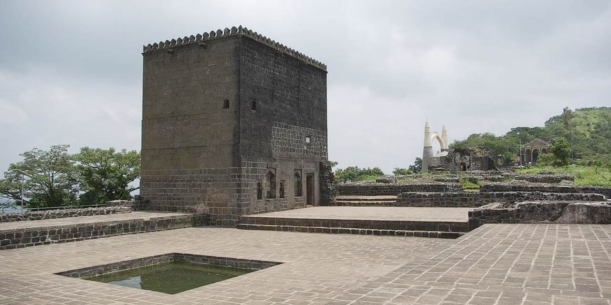
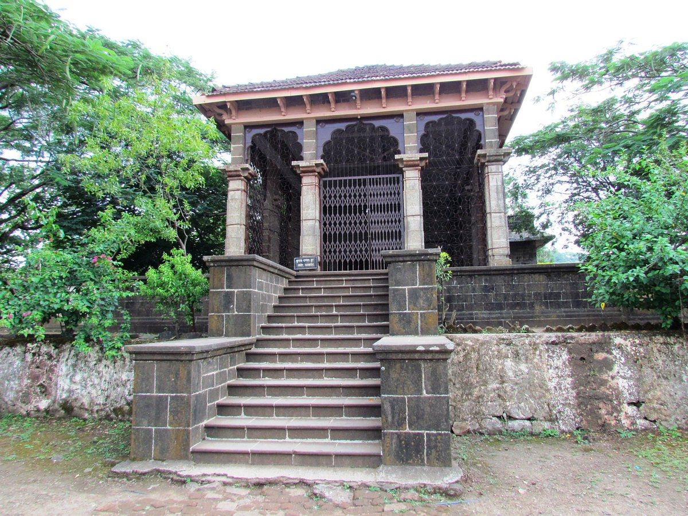

Shivneri
 




About
Shivneri Fort is a historic hill fort located in the Junnar taluka of Pune district in Maharashtra, India. It is situated approximately 90 kilometers north of Pune city. Shivneri Fort is not only a significant historical site but also holds immense cultural and sentimental importance as it is the birthplace of Chhatrapati Shivaji Maharaj, the founder of the Maratha Empire.
History:
Shivneri Fort has a long history that dates back to ancient times. It is believed to have been originally built during the Satavahana period (around the 1st century AD) and later came under the control of various dynasties, including the Nizamshahi dynasty.
The fort gained immense historical significance during the reign of Chhatrapati Shivaji Maharaj. Shivaji was born in the fort in 1630, and it was here that he spent his early childhood. The fort played an important role in shaping Shivaji's life and eventually became a symbol of his valor and vision.
Shivneri Fort is renowned for its historical and cultural significance, as well as its impressive architecture. Some of the key features of the fort include:
Entrance Gates: The fort has multiple entrance gates, each with unique architectural features, including the Kadelot, Mastani, and Shivai Darwajas.
Shivai Temple: At the top of the fort, there is a small temple dedicated to Goddess Shivai, who is believed to have protected young Shivaji.
Ambarkhana: A granary constructed on the fort to store food supplies during its active period.
Water Cisterns: Shivneri Fort has rock-cut water cisterns that provided water to its occupants.
Trekking and Tourism:
Shivneri Fort is a popular destination for tourists, history enthusiasts, and pilgrims. The trek to the fort starts from the base village of Junnar and takes around 30 to 45 minutes to reach the summit. The trek is relatively easy and suitable for people of all age groups.
The fort attracts a large number of visitors, especially pilgrims and admirers of Chhatrapati Shivaji Maharaj, who come to pay their respects at the place of his birth. The fort's serene and historical ambiance offers a unique opportunity to connect with the great Maratha warrior king's legacy.
Shivneri Fort is now managed and maintained by the Archaeological Survey of India (ASI) and continues to be a site of historical and cultural significance in Maharashtra. It serves as a reminder of the remarkable life and achievements of Chhatrapati Shivaji Maharaj, who left an indelible mark on the history of India.